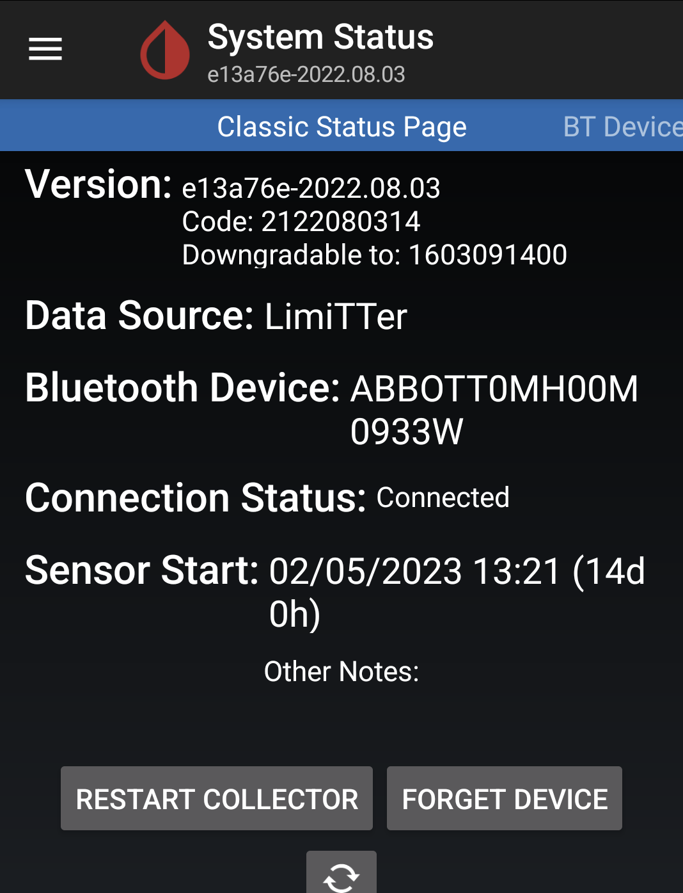
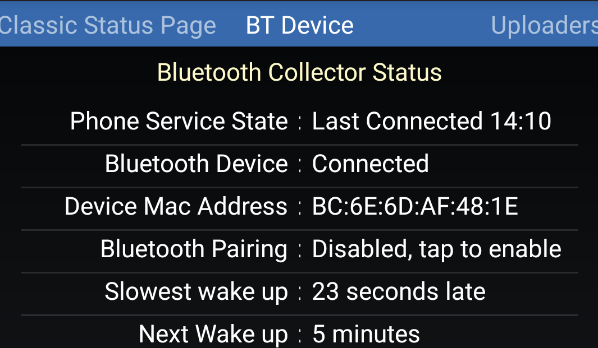
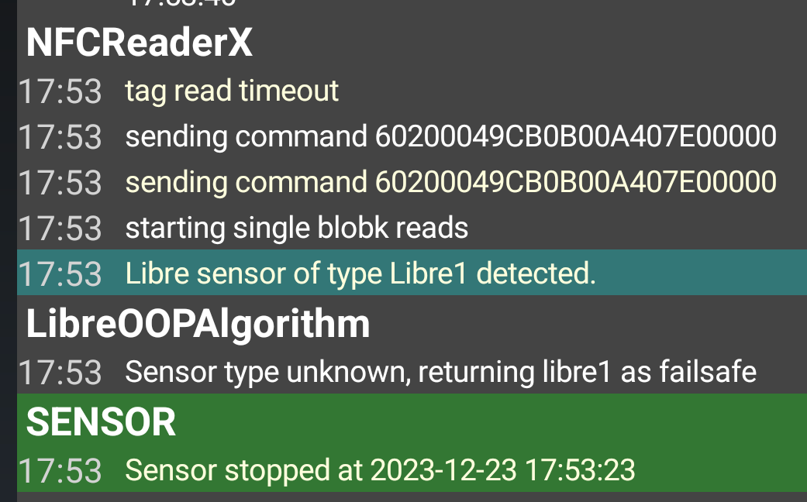

Libre2 Direct⌁
Libre2 (EU only) can connect directly to xDrip+ without a bridge. This page gives information on what a working system should look like.
See here to learn how to set it up...
What it should look like⌁
When it has been set up correctly, and a new sensor is running, the xDrip status pages & logs should appear as is shown below. Note - there is nothing different on the Uploaders tab for Libre 2 direct operation.
Go to xDrip+ System Status and also BT device. If you don't know how, look here first.
Classic Status Page⌁

Version⌁
Will vary with your xDrip+ version
Data Source⌁
This should show as LimiTTer. Whilst mis-leading, this is normal behaviour.
Bluetooth Device⌁
This is the unique serial ID for the sensor. It will start with ABBOTT...
Connection status⌁
This should be "connected".
Sensor Start⌁
The time the sensor is started.
Restart Collector button⌁
This stops the collector function in xDrip+ and then starts it from scratch (includes Bluetooth connection to the device that was stopped)
Forget Device button⌁
This removes the Bluetooth device from known devices: you need to scan Bluetooth to find it and pair it, or NFC scan again.
Refresh button⌁
The status is not real time unlike the BT device tab, refresh checks connection state.
BT Device Page⌁
Swipe the screen towards the left to display the BT Device page.

Bluetooth Collector Status⌁
Phone Service State⌁
This should normally give the time that the last connection was made. Sometime it reads XXX Blu Con XXX, but this is a temporary phase, and will change to Last Connect HH:MM
Bluetooth Device⌁
Bluetooth should always be connected.
Device Mac Address⌁
This should be a string of six pairs of Hex numbers. Unique for each sensor
Bluetooth Pairing⌁
This should stay "Disabled, tap to enable. Be careful to NOT tap this.
If you tap it by mistake, tap it again until it returns to disabled.
Slowest wake up⌁
You can ignore this. xDrip+ doesn't spend its time waiting for readings: it will start expecting them at after a certain time (traditionally 5 minutes). If no data arrives at that time, you'll see "Woke up early" meaning xDrip+ was expecting data to be ready but there's none. Slowest wake up is the highest delay encountered before receiving data normally.
Next Wake up⌁
Should say 5 minutes
Event Logs⌁
From the vertical ... menu at the top right of the main screen, select View Events Log

LibreOOPAlgorithm⌁
you should see a row of comments of the format HH:MM Creating BG time = NNN raw = RRRR where HH::MM is the time, NNN is an internal time counter (a new reading has a number higher than the previous one), and RRRR is the raw value taken from the sensor, in 10th of mg/dl (1000 is 100 mg/dl or 5.5 mmol/l). This shows that the sensor is connected, and good readings are being taken. The reading should be every minute, although some might have skipped, as has happened here.
Cannot NFC Scan new sensor - NFC Timeout⌁
There is an emerging problem, especially in Europe, where you cannot start the sensor with an NFC scan. Instead of the "Scanned OK" message after "Scanning", you will see "NFC TimeOut" or "NFC failsafe". Look in the debug logs. If you see a message "Sensor type unknown, returning libre1 as failsafe", or "Libre sensor of type Libre1 detected", then you need to update both OOP2 & xDrip+.

You will need to download a version of OOP2 from the end of May 2023, and also upgrade xDrip-plus so that is is 2023-05-27 or later. A newer version of the sensors, "C5" with updated firmware require these updated versions.
Losing Bluetooth Connection with Samsung Phone?⌁
A number of people who have a Samsung phone have reported that they sometimes lose connection with the sensor. If this is the case with you, you can try changing some Bluetooth settings.Click on the QR code and then scan as directed.